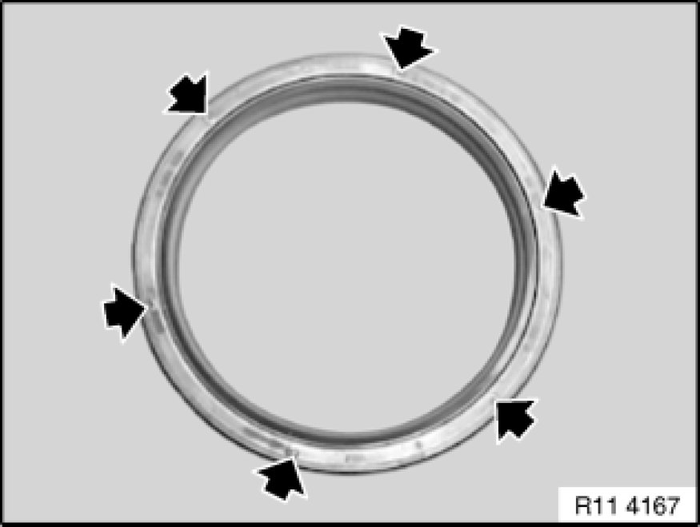
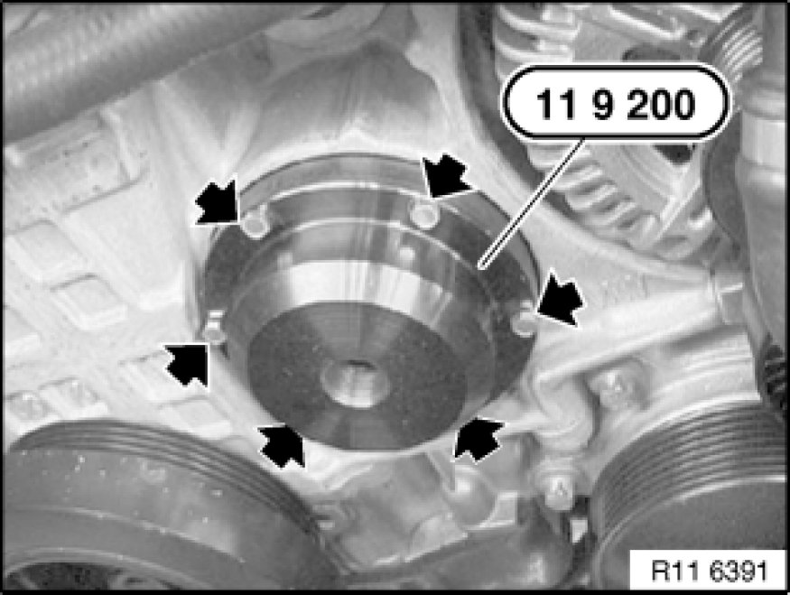
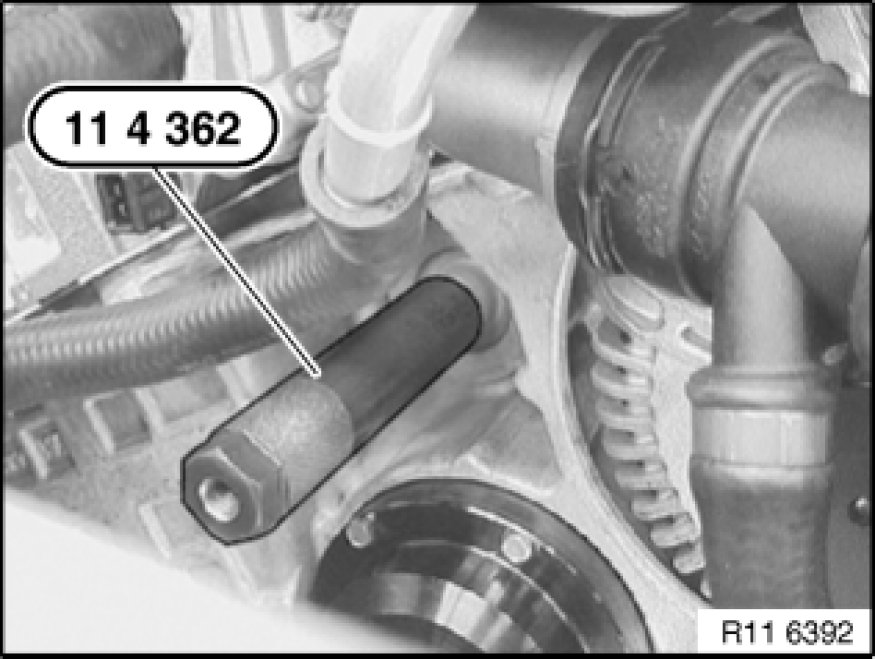
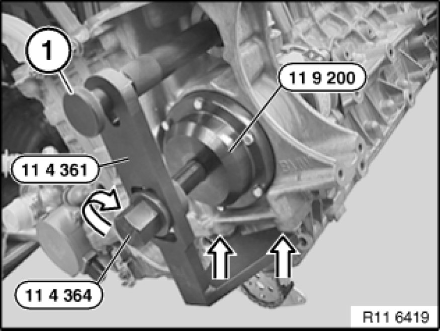
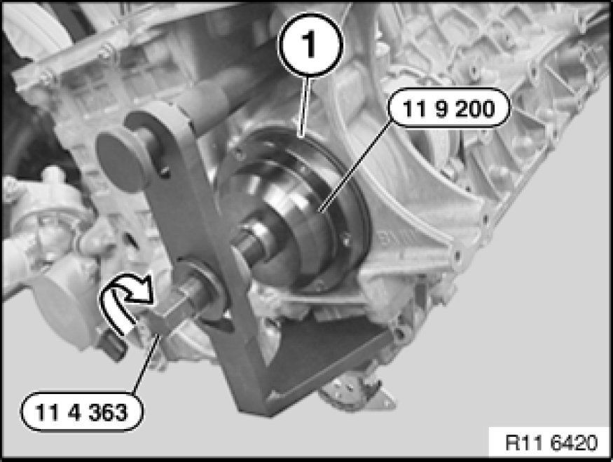

Engine Accessory Drive Seal: Service and Repair
11 14 010 - Replacing sealing cover for vacuum pump (N52K)

Special tools required:
- 11 4 361
- 11 4 362
- 11 4 363
- 11 4 364
- 11 9 200 11 9 200 Puller

Necessary preliminary tasks:
- Remove fan cowl Service and Repair with electric fan
- Remove alternator drive belt
- Remove drive belt tensioner Service and Repair

Note:
The procedure is the same as for the crankshaft radial seal.
Expose removal openings on sealing cover.

Convert special tool 11 9 200 11 9 200 Puller (see illustration).
Screw special tool 11 9 200 11 9 200 Puller onto sealing cover.
Note:
Insert screws until flush only with special tool 11 9 200 11 9 200 Puller.

Screw in special tool 11 4 362.

Attach special tool 11 4 361 to bedplate construction screw connection (see arrow).
Secure with knurled screw (1).
Screw special tool 11 4 364 into special tool 11 9 200 11 9 200 Puller and screw out in direction of arrow.
Note:
For purposes of clarity, the picture shows the alternator and power steering pump removed.

Prepare new sealing cover (1) with special tool 11 9 200 11 9 200 Puller without screws.
Screw in sealing cover with special tool 11 4 363 until it is flush.

Assemble engine.